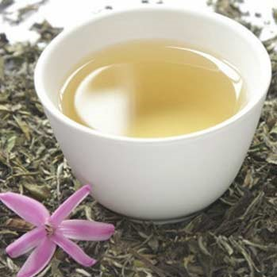
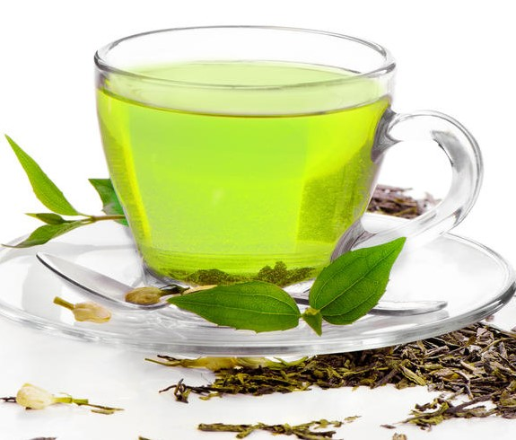
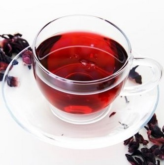
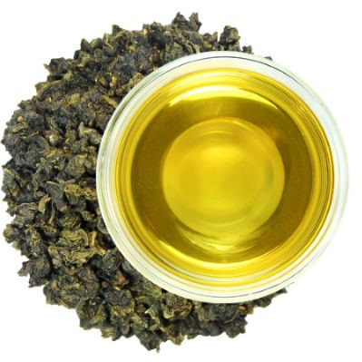
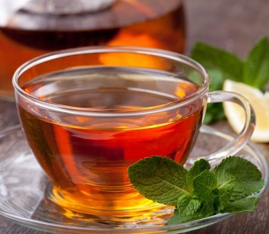

Белый чай
Белый чай обладает уникальным, ни с чем не сравнимым ароматом и вкусом. В его букете улавливаются тонкие нотки цветов, меда, тропических фруктов, свежей зелени, ягод, березового сока и многие другие тона.
|  |
Белый чайБелый чай обладает уникальным, ни с чем не сравнимым ароматом и вкусом. В его букете улавливаются тонкие нотки цветов, меда, тропических фруктов, свежей зелени, ягод, березового сока и многие другие тона. |

|
Желтый чайАромат жёлтого чая уникален, в нём есть копчёные нотки, присущие только этому чаю. Чаинки покрыты белым ворсом, тёмно-оливкового цвета с серебристым пушком. Аромат запоминающийся, яркие копченые нотки. Вкус сладковатый, но не избыточный, бодрящий, оригинальное послевкусие. |
|  |
Зеленый чайЗеленый чай — один из самых популярных видов. Изготавливается из чайных листов, который сушат сразу после сбора. Хороший напиток имеет благородный запах с жасминовыми нотками. Цвет желтовато-зеленоватый. Вкус насыщенный, иногда терпкий, в хороших сортах — сладковатый. |
|  |
Красный чайКитайский красный чай – это это сильно ферментированный чай, выращенный в Китае и называемый черным в других странах. При заваривании дает красно-коричневый цвет настоя. |

|
ПуэрСоздается на основе старых чайных листьев. Напиток характеризуется темно-коричневым, красным или ореховым оттенком, запах имеет специфический — землянистый. Также удивляет неординарными вкусовыми качествами — земляным привкусом со сладковатым послевкусием. |
|  |
УлунПосле заваривания лист приобретает красный цвет по краям и зеленый посередине. Оттенок приготовленного напитка варьируется от бледно-нефритового до темно-красного. Характеризуется острым, пряным, персиковым вкусом, цветочным ароматом. |
|  |
Черный чайЧерный чай изготавливается из листьев и не распустившихся почек. Вкус этого вида чая насыщенный, терпкий, но без горечи, иногда даже встречаются сладковатые оттенки. Аромат — бальзамический, смолистый. Цвет напитка красно-коричневый, красный или оранжевый. |